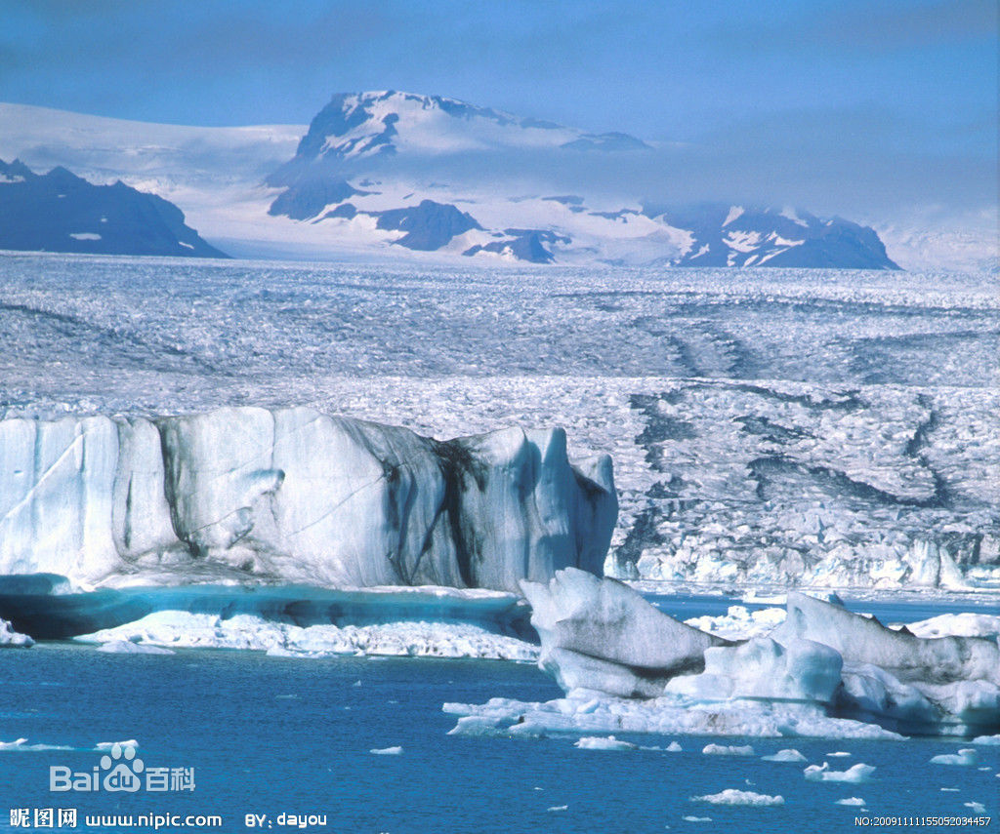

冰川地质学简介
冰川地质学的定义： 冰川地质学以鉴定古代冰川遗迹为基础，研究古冰川的发育规律和特征、 冰期与间冰期的气候变迁及其起源，进而了解它的地质作用和影响的科学。地质学的分支学科，亦称古冰川学。
冰川地质学的诞生地
冰川地质学的起源：1779年法国的苏冰川地质学的诞生地 苏里萨里沿袭当时流行的水成说，首次使用“漂砾”一词，解释侏罗山石灰岩上的花岗岩漂砾的成因。1795年， 英国的赫顿提出这些漂砾是由比现代大得多的冰川搬运而来的观点，从此诞生了古冰川作用和扩张的概念。 1832年德国的伯恩哈德提出北欧大陆曾发生过大规模冰川作用的概念。1837年瑞士的阿加西提出“大冰期”概 念和冰期术语，从而充实了自维涅茨、沙尔庞捷和施琴帕尔等一代人开创的大陆冰川作用的理论。至今，冰川地质学不过200年的历史
冰川是水的一种存在形式，是雪经过一系列变化转变而来的。要形成冰川首先要 有一定数量的固态降水，其中包括雪、雾、雹等。没有足够的固态降水作“原料” ，就等于“无米之炊”，根本形不成冰川。  在高山上，冰川能够发育，除了要求有一定 的海拔外，还要求高山不要过于陡峭。如果 山峰过于陡峭，降落的雪就会顺坡而下，形 不成积雪，也就谈不上形成冰川。雪花一落 到地上就会发生变化，随着外界条件和时间 的变化，雪花会变成完全丧失晶体特征的圆球 状雪，称之为粒雪，这种雪就是冰川的“原料”。 积雪变成粒雪后，随着时间的推移，粒雪的硬 度和它们之间的紧密度不断增加，大大小小的 粒雪相互挤压，紧密地镶嵌在一起，其间的孔 隙不断缩小，以致消失，雪层的亮度和透明度 逐渐减弱，一些空气也被封闭在里面，这样就 形成了冰川冰。
中国冰川分布示意图